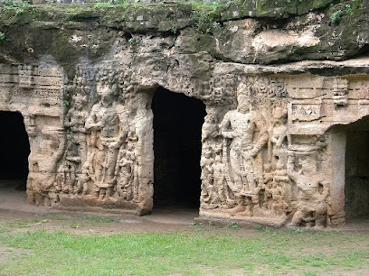

Takhteshwar Temple
Takhteshwar Temple is a famous religious site dedicated to Lord Shiva, situated on a hill. The temple offers panoramic views of the city and is surrounded by lush greenery, making it a peaceful retreat for devotees and visitors alike.

Ghogha Beach
Ghogha Beach is a popular destination for beach lovers and offers a serene environment with stunning sunsets. The beach is ideal for relaxation, picnics, and water sports, making it a perfect spot for families and friends.

Marine National Park
Bhavnagar Marine National Park is a beautiful coastal sanctuary that protects marine life and offers opportunities for eco-tourism. Visitors can explore the park through boat rides and enjoy the diverse flora and fauna.

Nilambag Palace
Nilambag Palace is a heritage hotel that was once the residence of the royal family of Bhavnagar. The palace features stunning architecture and lush gardens, and it now serves as a luxurious accommodation option for travelers.

Khambhalida Caves
The Khambhalida Caves are a group of ancient rock-cut caves that date back to the 4th-5th century AD. They are known for their intricate carvings and sculptures that depict various deities and stories from Hindu mythology.
Bhav Nagar Institute of Technology
The Bhav Nagar Institute of Technology is a renowned educational institution known for its quality education and innovative learning methods. It plays a significant role in shaping the future of engineering and technology in the region.